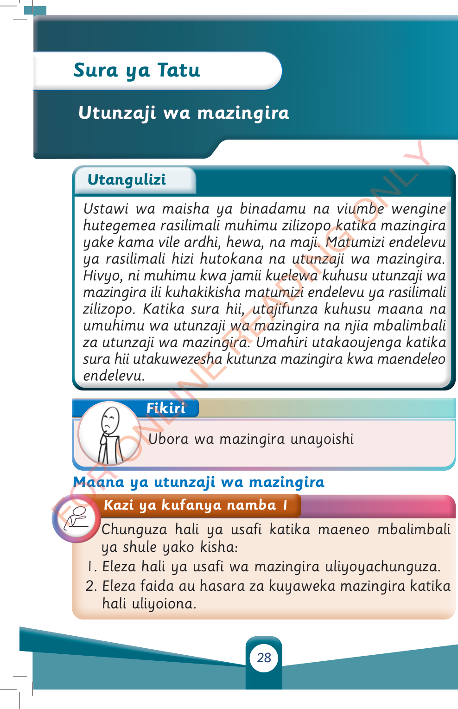

Kazi ya kufanya namba 1
Chunguza hali ya usafi katika maeneo mbalimbali ya shule yako kisha:

1. Eleza hali ya usafi wa mazingira uliyoyachunguza.
2. Eleza faida au hasara za kuyaweka mazingira katika hali uliyoiona.
Chunguza hali ya usafi katika maeneo mbalimbali ya shule yako kisha:

1. Eleza hali ya usafi wa mazingira uliyoyachunguza.
2. Eleza faida au hasara za kuyaweka mazingira katika hali uliyoiona.